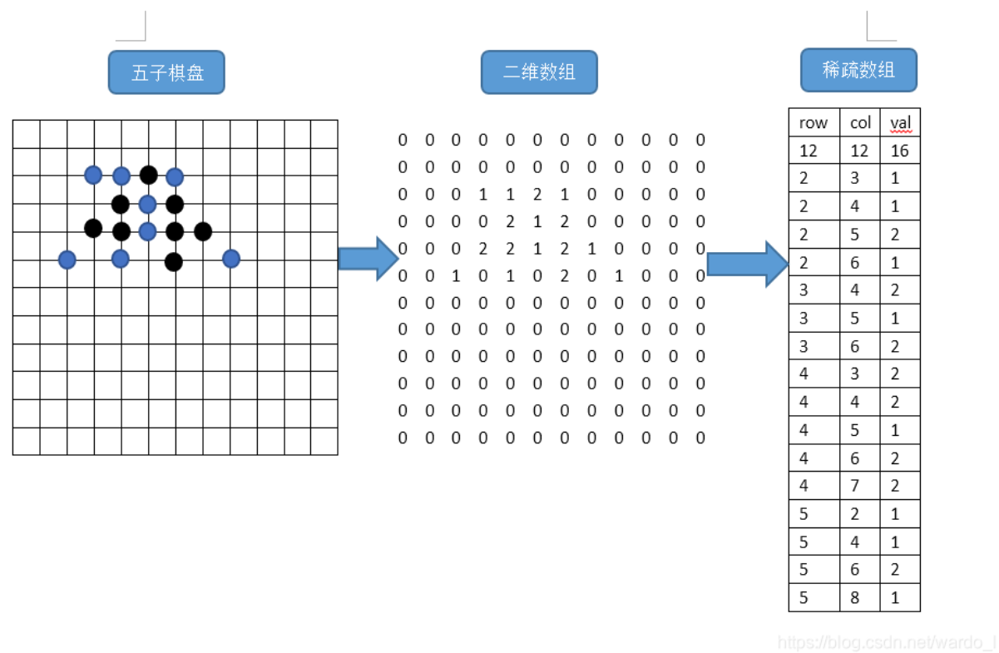
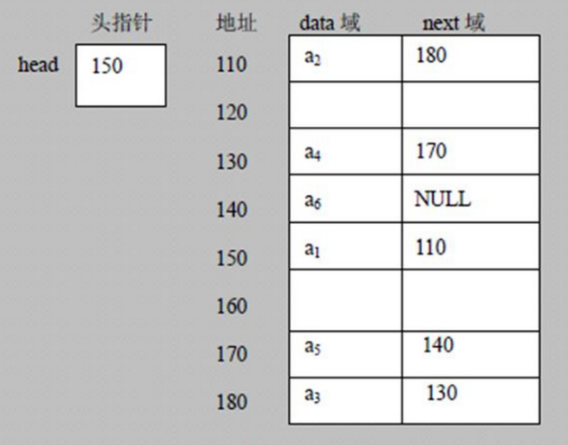
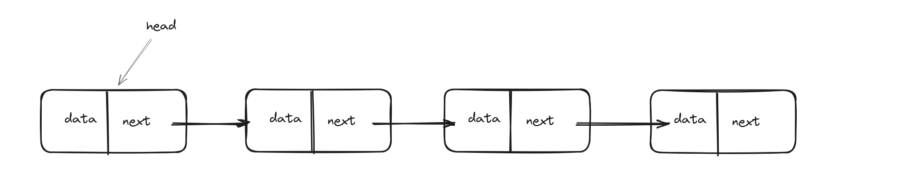
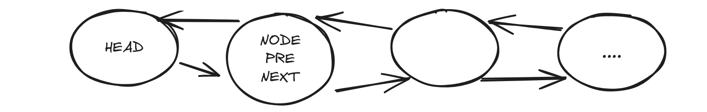
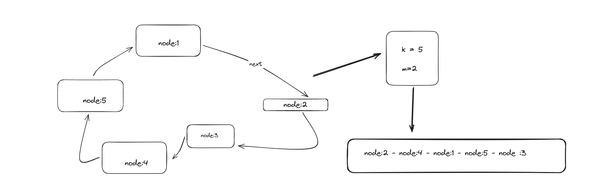
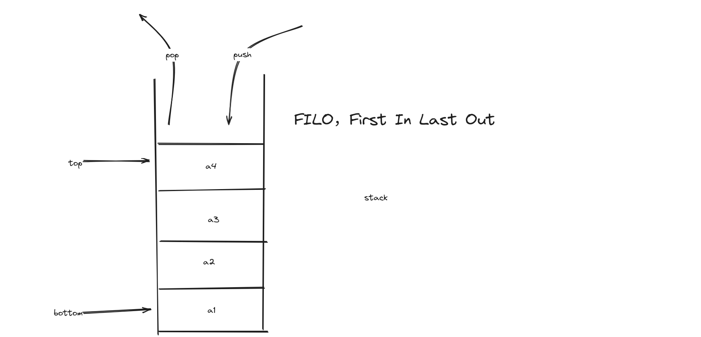
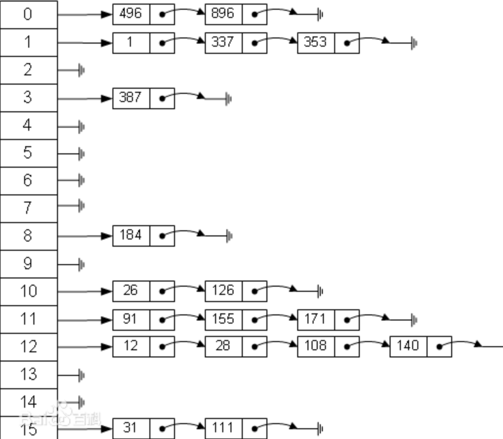
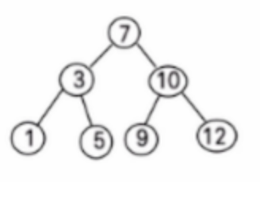
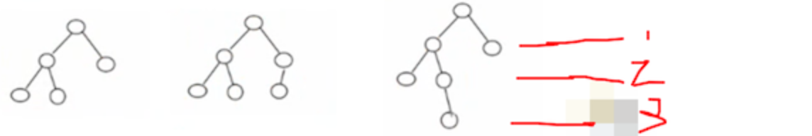
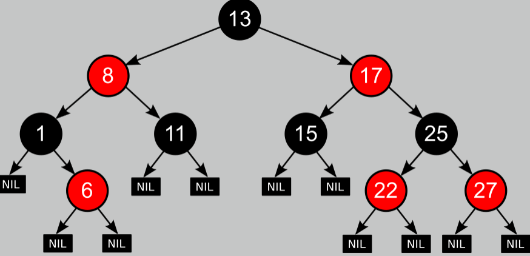

(F)数据结构
1,数组和队列
稀疏数组
-
介绍
当一个素组中大部分为0或者都是同一个数时，可以使用稀疏数组来保存该数组，就像是五子棋游戏一样，把整个五子棋棋盘定义成一个二位数组，大部分为0.
-
处理方式
1.记录一个数组一共有几行几列，有多少个不同的值
2.把具有 不同值的元素 的 行列及值 记录在一个 小规模的数组 中，从而缩小程序的规模
实际应用
以围棋为例，假设一个10x10的棋盘可以用个二维数组表示int[10] [10],数组全是零，红方和黑方分别用1和2表示，如下图：
代码实现
package main
import "fmt"
type SparseElement struct {
row, col, value int
}
type SparseArray struct {
row, col int
data []SparseElement
}
func NewSparseArray(row, col int) *SparseArray {
return &SparseArray{
row: row,
col: col,
data: []SparseElement{},
}
}
func (sa *SparseArray) Set(row, col, value int) {
element := &SparseElement{
row: row,
col: col,
value: value,
}
sa.data = append(sa.data, *element)
}
func (sa *SparseArray) Get(row, col int) int {
for _, data := range sa.data {
if row == data.row && col == data.col {
return data.value
}
}
return 0
}
func main() {
sparseArray := NewSparseArray(10, 10)
sparseArray.Set(1, 3, 1)
sparseArray.Set(4, 2, 2)
for i := 0; i < 10; i++ {
for j := 0; j < 10; j++ {
fmt.Printf("%d ", sparseArray.Get(i, j))
}
fmt.Println()
}
}
队列
队列暂时没有什么想法，先进先出？下面是自己写的代码
package main
import (
"sync"
)
type Queen struct {
Size int
items []interface{}
mutex sync.Mutex
}
func (queen *Queen) SetMaxSize(size int) {
queen.Size = size
}
func (queen *Queen) IsFull() bool {
return len(queen.items) == queen.Size
}
func (queen *Queen) EnQueen(item interface{}) {
queen.mutex.Lock()
defer queen.mutex.Unlock()
if !queen.IsFull() {
queen.items = append(queen.items, item)
}
}
func (queen *Queen) Fornt() interface{} {
return queen.items[0]
}
func (queen *Queen) IsEmpty() bool {
return len(queen.items) == 0
}
func main() {
queen := &Queen{
Size: 20,
}
go func() {
for i := 0; i < 20; i++ {
}
}()
}
2,链表
介绍
- 链表是以 节点 的方式来存储，是 链式存储
- 每个节点包含 data 域、next 域，指向下一个节点
- 链表的各个节点 不一定是连续存储，如上图所示
- 链表还分：带头节点、不带头节点，根据实际需求来确定
链表的优势
删除和插入数据比较方便，时间复杂度为O1,但是查找不方便，都是要从第一个节点一直找next指针，直到找到为止，如果数字的话，直接找到数组的index就可以了

单链表
下图是单链表的逻辑结构，每个节点都包含下一个节点的指针，当某个节点的next为nil的时候，就到了尾节点
单链表应用实战
用单链表实现对足球明星排名的存储（个人喜好，不供参考）
- 完成对球星人物的 增删改查 操作
- 根据排名对球星排名进行排序
双向链表
单链表的缺陷：
- 查找方向只能是单向的
- 不能自我删除，需要依靠辅助节点
双向连表简图：

插入：
tmp.next.pre = newNode
tmp.next = newNode
newNode.pre = tmp
newNode.next = tmp.next
删除：
tmp.next.pre = tmp.pre
tmp.pre.next = tmp.
Josephu 问题

- k 表示环形链表中的节点数
- m 表示 喊号的次数
3,栈
栈的应用场景
-
子程序的调用
在跳往子程序前，会先将 下个指令的地址 存到堆栈中，直到子程序执行完后再 将地址取出，以 回到原来的程序中。
如方法中调用方法。
-
处理递归调用
和子程序调用类似，只是除了存储下一个指令的地址外，也将参数、区域变量等数据存入堆栈中。
-
表达式的转换（中缀表达式转后缀表达式）与求值（实际解决）
-
二叉树的遍历
-
图形的深度优先（depth-first）搜索法
4,哈希表
介绍
散列表（Hash table），也叫哈希表。是根据 关键码值（key value） 而直接进行访问的数据结构。
哈希表在内存中的结构就如下图所示：
如上所述：
-
左侧有 15 个元素的数组（可以用数组实现），就是一个表
-
该表中存放的是一个链表
-
通过 散列函数，计算出一个位置，然后在把数据存储到这个链表上
比如上面有 15 个，可以计算出散列值后，再取模。
111 % 15，就定位在了某一个元素位置上。
代码实现
package main
import "fmt"
type Employee struct {
ID int
Name string
Sal int
Next *Employee
}
type EmpHashTable struct {
Table []*Employee
Size int
}
func NewTable(size int) *EmpHashTable {
return &EmpHashTable{
Table: make([]*Employee, size),
Size: size,
}
}
// 插入
func (ht *EmpHashTable) Insert(emp *Employee) {
Index := int(emp.ID) % ht.Size
if ht.Table[Index] == nil {
ht.Table[Index] = emp
} else {
current := ht.Table[Index]
for current.Next != nil {
current = current.Next
}
current.Next = emp
}
}
// 查找
func (ht *EmpHashTable) search(id int) (emp *Employee) {
Index := id % ht.Size
if ht.Table[Index].ID == id {
return ht.Table[Index]
} else {
current := ht.Table[Index]
for current != nil {
if current.ID == id {
return current
}
current = current.Next
}
}
return nil
}
// 删除
func (ht *EmpHashTable) del(id int) bool {
Index := id % ht.Size
current := ht.Table[Index]
var prev *Employee
for current != nil {
if current.ID == id {
if prev == nil {
//删除的是第一个元素
ht.Table[Index] = current.Next
} else {
//中间或者末尾
prev.Next = current.Next
}
return true
}
prev = current
current = current.Next
}
return false
}
// 修改
func (ht *EmpHashTable) change(id int, newEmp *Employee) bool {
Index := id % ht.Size
current := ht.Table[Index]
for current != nil {
if current.ID == id {
current.Name = newEmp.Name
current.Sal = newEmp.Sal
return true
}
current = current.Next
}
return false
}
// 遍历
func (ht *EmpHashTable) DisPlayAll() {
for _, emp := range ht.Table {
current := emp
for current != nil {
fmt.Printf("ID:%d,Name:%s,sal:%d\n", current.ID, current.Name, current.Sal)
current = current.Next
}
}
}
func main() {
empTable := NewTable(5)
empTable.Insert(&Employee{ID: 101, Name: "x14n", Sal: 3000})
empTable.Insert(&Employee{ID: 102, Name: "x14n", Sal: 3000})
empTable.Insert(&Employee{ID: 103, Name: "x14n", Sal: 3000})
empTable.Insert(&Employee{ID: 104, Name: "x14n", Sal: 3000})
empTable.Insert(&Employee{ID: 105, Name: "x14n", Sal: 3000})
empTable.Insert(&Employee{ID: 106, Name: "x14n", Sal: 3000})
empTable.Insert(&Employee{ID: 107, Name: "x14n", Sal: 3000})
empTable.Insert(&Employee{ID: 108, Name: "x14n", Sal: 3000})
empTable.Insert(&Employee{ID: 109, Name: "x14n", Sal: 3000})
emp := empTable.search(101)
if emp == nil {
fmt.Println("no found")
} else {
fmt.Println("find")
fmt.Printf("ID:%d,Name:%s,sal:%d\n", emp.ID, emp.Name, emp.Sal)
}
empTable.DisPlayAll()
fmt.Println("//删除")
empTable.del(102)
fmt.Println("//修改")
empTable.change(101, &Employee{Name: "ahahah", Sal: 10000000})
fmt.Println("////////")
empTable.search(101)
fmt.Println("////////")
empTable.DisPlayAll()
}
5,树基础
二叉树
介绍
简单来说就是左子节点小于root，右节点大于root
遍历
-
前序遍历：先输出父节点，在遍历左节点（递归），再遍历右节点（递归）
-
中序遍历：先遍历左子树（递归），再输出父节点，再遍历右子树（递归）
-
后序遍历：先遍历左子树（递归），再右子树（递归），再父节点
前： a -> b -> d ->e ->c
中: d -> b -> e -> a ->c
后： d->e -> b-> c ->a

删除
// 插入原始
func (bt *binaryTree) insert(key int) {
if bt.root == nil {
bt.root = &node{key: key}
}
bt.insertRecursively(bt.root, key)
}
func (bt *binaryTree) insertRecursively(root *node, key int) {
if key < root.key {
if root.LeftChild == nil {
root.LeftChild = &node{key: key}
} else {
bt.insertRecursively(root.LeftChild, key)
}
} else {
if root.RightChild == nil {
root.RightChild = &node{key: key}
} else {
bt.insertRecursively(root.RightChild, key)
}
}
}
// 搜索元素
func (bt *binaryTree) search(key int) bool {
return bt.searchRecurisively(bt.root, key)
}
func (bt *binaryTree) searchRecurisively(root *node, key int) bool {
if root == nil {
fmt.Println("root is nil")
return false
}
if root.key == key {
return true
}
if root.key > key {
return bt.searchRecurisively(root.LeftChild, key)
} else {
return bt.searchRecurisively(root.RightChild, key)
}
}
// 前序遍历
func (bt *binaryTree) PerOrderTraversal(node *node) {
if node != nil {
fmt.Printf("%d", node.key)
bt.PerOrderTraversal(node.LeftChild)
bt.PerOrderTraversal(node.RightChild)
}
}
// 中序遍历
func (bt *binaryTree) InOrderTraversal(root *node) {
if root != nil {
bt.InOrderTraversal(root.LeftChild)
fmt.Printf("%d", root.key)
bt.InOrderTraversal(root.RightChild)
}
}
// 后序遍历
func (bt *binaryTree) PostOrderTraversal(root *node) {
if root != nil {
bt.PostOrderTraversal(root.RightChild)
bt.PostOrderTraversal(root.LeftChild)
fmt.Printf("%d", root.key)
}
}
顺序查找二叉树

- 顺序二叉树 通常只考虑 完全二叉树
- 第 n 个元素的 左子节点 为
2*n+1 - 第 n 个元素的 右子节点 为
2*n+2 - 第 n 个元素的 父节点 为
(n-1)/2
线索化二叉树

6,树实际
堆排序
介绍
堆是具有以下性质的完全二叉树：
-
大顶堆：每个节点的值都 大于或等于 其左右孩子节点的值
注：没有要求左右值的大小关系
-
小顶堆：每个节点的值都 小于或等于 其左右孩子节点的值
大顶堆

对堆中的节点按层进行编号，映射到数组中如下图

小顶堆（反之）
堆排序思路—-
package main
import (
"fmt"
)
func heapSort(arr []int) {
n := len(arr)
// 构建最大堆
for i := n/2 - 1; i >= 0; i-- {
heapify(arr, n, i)
}
// 依次取出堆顶元素，交换位置，重新堆化
for i := n - 1; i > 0; i-- {
// 交换堆顶和当前堆的最后一个元素
arr[i], arr[0] = arr[0], arr[i]
// 对交换后的堆顶执行堆化
heapify(arr, i, 0)
}
}
func heapify(arr []int, n, i int) {
largest := i
left := 2*i + 1
right := 2*i + 2
// 找出左子节点和右子节点中的最大值
if left < n && arr[left] > arr[largest] {
largest = left
}
if right < n && arr[right] > arr[largest] {
largest = right
}
// 如果最大值不是父节点，交换父节点和最大值，然后递归堆化
if largest != i {
arr[i], arr[largest] = arr[largest], arr[i]
heapify(arr, n, largest)
}
}
func main() {
arr := []int{4, 10, 3, 5, 1}
fmt.Println("Unsorted array:", arr)
heapSort(arr)
fmt.Println("Sorted array:", arr)
}
关于堆排序的思考
最开始我认为堆排序为什么不直接 将二叉树中的叶子节点的值存到一个数组中，然后对数组的值进行从小到大进行 排序，然后根据数组的索引和索引的值创建一个新的二叉树，这样不是更简单吗，仔细想想这不是更简单吗。
堆排序之所以高效的原因：
- 不需要额外的数据结构： 堆排序直接在原始数组上进行操作，不需要额外的数据结构来存储节点的值。这节省了空间，并减少了复杂性。
- 原地排序： 堆排序是一种原地排序算法，它不需要额外的内存来存储中间结果，因此空间复杂度为 O(1)。
- 时间复杂度： 堆排序的时间复杂度是 O(n log n)，其中 n 是要排序的元素数量。这是一种非常高效的排序算法，特别适用于大型数据集。
如果按照原来的思路会带来的问题：
- 创建了额外的数据结构，增加了空间复杂度
- 增加了时间复杂度
赫夫曼树
介绍
权路径长度最小（wpl）的二叉树称为最优二叉树也被成为赫夫曼树。
赫夫曼树是带全路径长度最短的树，权值较大的节点离根节点较近
相关概念
-
路径 和 路径长度：
在一颗树中，从一个节点往下可以到达的孩子或孙子节点之间的通路，称为 路径。
通路中分支的数目称为路径长度。若规定根节点的层数为 1，则从根节点到第 L 层节点的路径长度为 L-1
-
节点的权 及 带权路径长度
若将树中节点赋给一个有着某种函数的数值，则这个数值称为该节点的 权。
节点的带权路径长度为：从根节点到该节点之间的路径长度与该节点的权的乘积。
-
树的带权路径长度
所有叶子节点的带权路径长度之和，记为 WPL（weighted path length），权值越大的节点离根节点越近的二叉树才是最优二叉树

赫夫曼树实现——
二叉排序树
介绍
对于二叉排序树的任何一个 非叶子节点，要求如下：
- 左节点，比父节点小
- 右节点，比父节点大

完整平衡二叉树（AVL树）
介绍
平衡二叉树也叫 平衡二叉搜索树（Self-balancing binary search tree），又被称为 AVL 树，可以保证 查询效率较高。它是解决 二叉排序 可能出现的查询问题。
它的特点：是一颗空树或它的 左右两个子树的高度差的绝对值不超过 1，并且左右两个子树都是一颗平衡二叉树。
如下所述，哪些是平衡二叉树？
-
是平衡二叉树：
- 左子树高度为 2
- 右子树高度为 1
他们差值为 1
-
也是平衡二叉树
-
不是平衡二叉树
- 左子树高度为 3
- 右子树高度为 1
他们差值为 2，所以不是
平衡二叉树的常用实现方法有：
-
红黑树
 -
AVL（算法）
-
替罪羊树
-
Treap
-
伸展树
7,多路查找树
二叉树与B树
B树,B+树,B*树
8,图
(S)算法
1,递归
2,排序算法
冒泡排序
func bubbleSort(arrs []int) {
len := len(arrs)
for i := 0; i < len-1; i++ {
for j := 0; j < len-i-1; j++ {
if arrs[j] > arrs[j+1] {
arrs[j], arrs[j+1] = arrs[j+1], arrs[j]
}
}
}
}
选择排序
func selectSort(arr []int) {
n := len(arr)
for i := 0; i < n-1; i++ {
minIndex := i
for j := i + 1; j < n; j++ {
if arr[j] < arr[minIndex] {
minIndex = j
}
}
if minIndex != i {
arr[i], arr[minIndex] = arr[minIndex], arr[i] // 交换元素
}
}
}
插入排序
package main
import "fmt"
func InsertSort(array []int) {
n := len(array)
for i := 1; i < n; i++ {
for js := i; js > 0; js-- {
if array[js] < array[js-1] {
array[js], array[js-1] = array[js-1], array[js]
}
}
}
}
func main() {
array := []int{7, 6, 4, 5, 3, 2}
InsertSort(array)
fmt.Println(array)
}